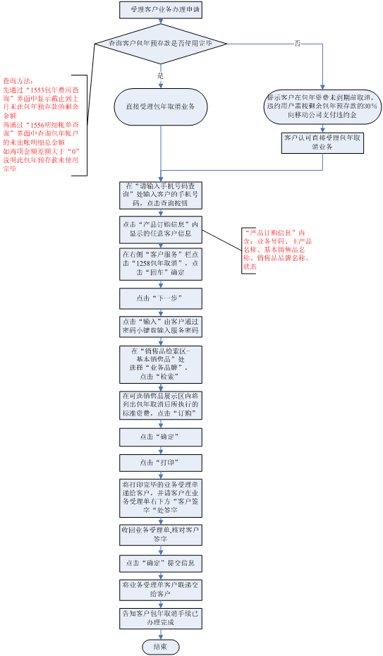

包年取消
一、业务介绍
包年取消业务是指时间未到期前的取消，包括包年话费用完而时间未到期前的取消。
二、注意事项：
1、在包年业务到期前可以违约提前取消该业务，违约用户需按包年剩余预存款的30％向移动公司支付违约金。
2、包年取消后将转为指定的资费，根据客户包年资费的品牌，转为对应的全球通50普通单向资费（省）/动感地带30普通单向资费（省）/神州行30普通单向资费（省），基本通话费和包年的基本通话费相同。包年取消后需根据客户需求进行主资费变更。
（1）全球通50普通单向资费（省）资费标准：月租50元（日计），本地通话费主叫0.40元/分钟、被叫免费。其他资费正常收取。
（2）动感地带30普通单向资费（省）资费标准：月租30元，月租日计，本地通话费主叫0.30元/分钟、被叫免费，其他资费正常收取
（3）神州行30普通单向资费（省）资费标准：月租30元，月租日计，本地通话费主叫0.30元/分钟、被叫免费，其他资费正常收取
3、所有的包年业务取消立即生效。
三、相关业务规范
1、凭服务密码办理。
2、包年取消界面只适用于话费包年取消、月租包年取消操作。可选套餐包年取消（指新版按月列帐的可选套餐包年，以下同）在可选套餐包年界面中取消。包年取消后将转为指定的资费，指定资费与包年到期资费相同。
3、可选包年资费立即取消，没有后续的资费跟随。
4、如客户想要办理其他的资费，包年取消后，再进行相关的主资费变更即可。变更后的资费生效原则同原来的生效原则。
5、办理包年（包半年、包季）资费的用户，在包年业务到期前可以违约提前取消该业务，违约用户需按剩余协议预存款（包年、包半年、包季的预存款）的30％向移动公司支付违约金。如违约，用户在资费到期前可到移动营业厅持有效证件办理违约手续，违约金按办理取消业务的当月出帐后剩余的协议预存款进行计算。
6、话费包年、月租包年取消日期前产生的费用本月出帐后将从包年款中扣除，本月客户的包年未出帐费用不回滚计算。除话费包年、月租包年以外的包年类业务取消后包年款被冻结（被冻结的包年款在本月出帐后，扣除30%违约金剩余部分返还到客户现金预存款中），不参与本月出帐划拨，本月用户的未出帐费用回滚计算（回滚，即原按包年资费计费的未出帐话费，将按后一个资费进行重新计算，其中二次批价部分不重新计算，固定费用原日计的，在新的资费中也是日计的，不重新计算）。
四、操作流程图

五、操作界面说明 (点击查看详细内容)